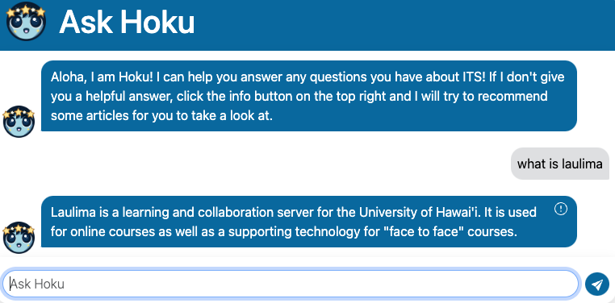

AskHoku - ITS ChatBot

Check out our project!
Can’t connect to the wifi? Have no clue how to set up user authentication? Not everyone is naturally tech savvy these days, and we sometimes require extra assistance. But who is there to help thousands of University of Hawaii students and staff whenever and wherever they need it?
The current UH ITS AskUs web page has an outdated search system which makes it difficult for users to find the answers that they are looking for. Simple searches like “How do I connect to the wifi?”, gives out a list of articles for the user to look through. This can be very time consuming for users to use just to find an answer to a simple question. Because of the non-user friendly design of the current ITS website, many users go to a Help Desk assistant instead of using the current Ask Us search bar.
Our team created a ChatBot, named Hoku, with the use of modern AI tools that will improve on the current search functionality. When the user sends their question to Hoku, Hoku responds to the user with a complete and conversational response in seconds. Our solution provides a 24/7 conversational service to users so that they can receive the assistance that they need.
How it works

When a user asks Hoku a question, Hoku will search for relevant chunks of data in ITS related articles and websites. Based on the similarity, Hoku will first look in the FAQ database, which contains answers that admins have provided. If there is no similarity in the FAQ database, then Hoku will look for similarities within the ITS articles and websites. When a similar context is found, with Open AI’s GPT 3.5 turbo instruct model, Hoku is prompted to only answer questions based on the information given. Hoku is instructed to give clear and concise answers only based on UH’s information.
Using GPT 3.5 had some security issues because of the possibility of users to send requests that are meant to manipulate AI into performing unauthorized actions for malicious purposes. This is commonly known as prompt injections. To prevent Hoku from complying with prompt injections, we use a Naive Bayes TF-IDF prompt injection classifier that was trained on a dataset of 600 labeled prompts. This classifier will check if the user’s question is likely to be a prompt injection, and if so, then Hoku will not comply with the user’s question or request.
Report and FAQ System

Sometimes the user may not be satisfied with Hoku’s response to their question. By pressing on the icon located at the top right corner of Hoku’s answer, the user can view the ITS articles and websites that Hoku got her answer from.
If the user is still not satisfied with Hoku’s response or the recommended articles, then the user can report it for admins to resolve. Our report system allows admins to view and stay updated with issues that Hoku may produce. Users are able to report Hoku’s answers by checkmarking categories or by leaving a comment. This gets sent to the admin, where they can submit the correct/updated answer to the user’s question. The admin’s submission is saved in a database of FAQs. When the same or very similar question is asked again, Hoku will respond with the new answer that the admin has provided.
Community Forum Page

Hoku may not have all of the answers to users’ questions, so a community forum page was made for users to post their questions. Other users in the UH community can respond, creating an interactive space for assistance and recommendations. Users also have the option to edit their posts for corrections or updates. Our website also allows admins to monitor and remove posts violating school policy. Admins can delete inappropriate posts but cannot edit others’ contributions unless authored by them.
Contributions to the project
In this project, my main focus was the homepage UI and crafting Hoku’s appearance. Through trial and error, I created a user-friendly homepage, facilitating easy access for users seeking ITS help and information. Using CSS animation on the homepage and the chatbot, me and my team were able to make Hoku slide onto the screen and send a welcome message to the user when the webpage is first loaded in. This might seem like a simple and easy concept, but the implementation was complex and difficult. Additionally, I used Adobe Illustrator to create Hoku’s face for aesthetic appeal, which many of the AskHoku users enjoyed.
Another significant contribution that I had to the project was developing the community forum page. Me and my team aimed for a simple interface allowing users to upload, edit, delete their posts, and comment upon logging into AskHoku. Specifically, edit and delete options are available only for the post’s author. I also took in considerations for admins to manage the community forum page. From the admin’s side, they are able to delete any posts on the page, but are not allowed to make edits to other user’s posts. This required learning to check user IDs and roles in Meteor to manage access for editing or deleting posts.
What I learned from the project
Through this project, I gained a lot of knowledge about Meteor’s functionality and how to use React to render and design web applications. With my limited experience in web development, understanding React components was probably one of the most difficult parts of this project. Yet, by referencing React’s documentation and constantly testing out the website, I was able to gradually complete the tasks that I was assigned to. React components like ‘useState’ and ‘setState’ are some of the commonly used components in our application. These components were difficult to gain a good grasp on the functionality, however, me and my team were able to learn how to use these components correctly in order to create our final product.
Beyond the React components and features of Meteor, this project taught me a lot about teamwork in Software Engineering. Previously to this project, I would only develop coding projects on my own. Using websites, like Github, to share my code was a very new experience for me. Github provides features that allow you to organize the tasks that need to be completed by each group member. Using this to-do feature really helped me and my team members stay on track on finishing our application by the deadline. This project has been a valuable experience for me and my Software Engineering career. I was opened to many opportunities through this project. Because of our constant commitment to this project, I hope that our application will go beyond ICS 314 and be used by many people within the UH community. I can’t wait to see what opportunities and challenges that we will face by continuing to work on this project in the future!
Special thanks to my Hawaii Annual Code Challenge team: Micah Tilton and Kaylee Agorilla!